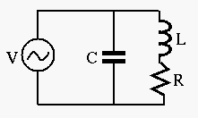

Find the expression of the resonant frequency of this circuit. If it is
given that  ,
and
,
and
 , what is the resonant frequency of this circuit?
Does the current drawn from the voltage source reach maximum or minimum
at this frequency?
, what is the resonant frequency of this circuit?
Does the current drawn from the voltage source reach maximum or minimum
at this frequency?
Hint: Unlike pure series and parallel RCL circuits, for this mixed RCL
circuit, both the real and imaginary parts of its admittance is a function
of  . To simplify the problem, we still assume the resonant
frequency
. To simplify the problem, we still assume the resonant
frequency  is achieved when the imaginary part of the admittance
is zero, similar to our discussion of parallel and series RCL circuits in
class.
is achieved when the imaginary part of the admittance
is zero, similar to our discussion of parallel and series RCL circuits in
class.